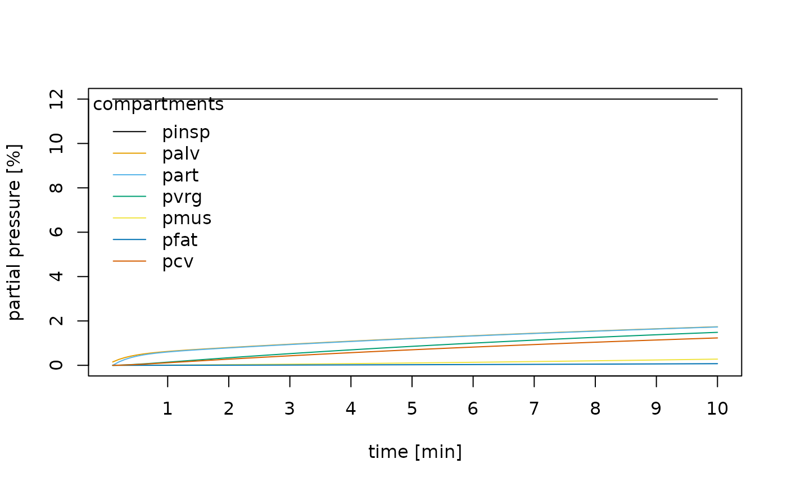

vignettes/cowles1973.Rmd
cowles1973.RmdThe simva package is an R implementation of
the algorithm for a three compartment model to simulate volatile
anaesthetic uptake proposed in Cowles, Borgstedt,
and Gillies (1973).
Here we reproduce the calulations presented in their article for diethyl ether.
First we have to define the partition coefficients for the given anaesthetic (diethyl ether) for all compartments.
part_coefs <- partition_coefficients("diethyl-ether")| lung | vrg | mus | fat |
|---|---|---|---|
| 12.1 | 12.1 | 12.1 | 44.1 |
We have to define the caridac output and the proportion of cardiac output each compartment recieves.
blood_flow <- cardiac_output(total = 6.3)| lung | vrg | mus | fat |
|---|---|---|---|
| 6.3 | 5.0274 | 0.9891 | 0.2772 |
Each compartment has a tissue and a blood volume.
The uptake of the volatile anaesthetic for a given compartment depends on the properties of the anaesthetic, the air/blood flow and the volume of the compartment.
conductances <- c(
lung = conductance(
flow = 4.0, # alveolar minute ventilation
partition_coefficient = 1.0 # gas:gas partition coefficient
),
vrg = conductance(blood_flow["vrg"], part_coefs["lung"]),
mus = conductance(blood_flow["mus"], part_coefs["lung"]),
fat = conductance(blood_flow["fat"], part_coefs["lung"])
)
capacitances <- c(
lung = lung_capacitance(
tissue_volume["lung_air"],
## blood volume and tissue:gas == blood:gas in that gase part_coefs
tissue_volume["lung_tissue"],
tissue_coefficient = part_coefs["lung"],
## blood volume and blood:gas part_coefs
blood_volume["lung"], part_coefs["lung"]
),
vrg = capacitance(
tissue_volume["vrg"], part_coefs["vrg"],
blood_volume["vrg"], part_coefs["lung"]
),
mus = capacitance(
tissue_volume["mus"], part_coefs["mus"],
blood_volume["mus"], part_coefs["lung"]
),
fat = capacitance(
tissue_volume["fat"], part_coefs["fat"],
blood_volume["fat"], part_coefs["lung"]
)
)
normal <- sim_anaesthetic_uptake(
pinsp = 12, delta_time = 0.1, total_time = 10,
conductances = conductances, capacitances = capacitances
)
knitr::kable(head(normal))| time | pinsp | palv | part | pvrg | pmus | pfat | pcv |
|---|---|---|---|---|---|---|---|
| 0.1 | 12 | 0.1513241 | 0.0000000 | 0.0000000 | 0.0000000 | 0.0000000 | 0.0000000 |
| 0.2 | 12 | 0.2644098 | 0.1513241 | 0.0063239 | 0.0004058 | 0.0000997 | 0.0051197 |
| 0.3 | 12 | 0.3501489 | 0.2644098 | 0.0171095 | 0.0011139 | 0.0002737 | 0.0138541 |
| 0.4 | 12 | 0.4163194 | 0.3501489 | 0.0310274 | 0.0020500 | 0.0005041 | 0.0251290 |
| 0.5 | 12 | 0.4684761 | 0.4163194 | 0.0471289 | 0.0031610 | 0.0007779 | 0.0381776 |
| 0.6 | 12 | 0.5105859 | 0.4684761 | 0.0647372 | 0.0044090 | 0.0010859 | 0.0524528 |
cols <- palette.colors(ncol(normal) - 1)
matplot(
normal[, -1],
col = cols,
type = "l",
lty = 1,
ylab = "partial pressure [%]",
xlab = "time [min]",
xaxt = "n"
)
axis(1, 1:10 * 10, labels = 1:10)
legend(
"topleft",
title = "compartments",
legend = colnames(normal)[-1],
lty = 1,
bty = "n",
col = cols
)
dav <- sim_anaesthetic_uptake(
pinsp = 12, delta_time = 0.1, total_time = 10,
conductances = conductances * c(2, 1, 1, 1),
capacitances = capacitances
)
hco <- sim_anaesthetic_uptake(
pinsp = 12, delta_time = 0.1, total_time = 10,
conductances = conductances * c(1, 0.5, 0.5, 0.5),
capacitances = capacitances
)
hum <- sim_anaesthetic_uptake(
pinsp = 12, delta_time = 0.1, total_time = 10,
conductances = conductances,
capacitances = capacitances,
use_humidification = TRUE
)
con <- sim_anaesthetic_uptake(
pinsp = 12, delta_time = 0.1, total_time = 10,
conductances = conductances,
capacitances = capacitances,
use_concentration_effect = TRUE
)
psh <- sim_anaesthetic_uptake(
pinsp = 12, delta_time = 0.1, total_time = 10,
conductances = conductances,
capacitances = capacitances,
shunt_frac = 0.1
)
met <- sim_anaesthetic_uptake(
pinsp = 12, delta_time = 0.01, total_time = 10,
conductances = conductances,
capacitances = capacitances,
metabolism_frac = 0.05
)| time | pinsp | palv | part | pvrg | pmus | pfat | pcv | |
|---|---|---|---|---|---|---|---|---|
| Normal | 10 | 12.0 | 1.74 | 1.73 | 1.49 | 0.28 | 0.07 | 1.23 |
| Increased ventilation | 10 | 12.0 | 3.11 | 3.10 | 2.70 | 0.51 | 0.14 | 2.24 |
| Decreased cardiac output | 10 | 12.0 | 2.24 | 2.23 | 1.60 | 0.20 | 0.05 | 1.31 |
| Humidification | 10 | 11.3 | 1.64 | 1.63 | 1.40 | 0.26 | 0.07 | 1.16 |
| Concentration effect | 10 | 12.0 | 1.91 | 1.90 | 1.64 | 0.31 | 0.08 | 1.36 |
| Pulmonary shunt | 10 | 12.0 | 1.78 | 1.72 | 1.48 | 0.28 | 0.07 | 1.23 |
| Metabolism | 1 | 12.0 | 0.61 | 0.61 | 0.14 | 0.01 | 0.00 | 0.12 |
(There is a small difference in the numbers for the metabolism scenario.)